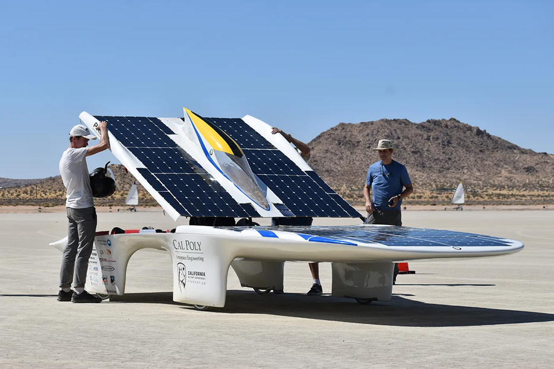
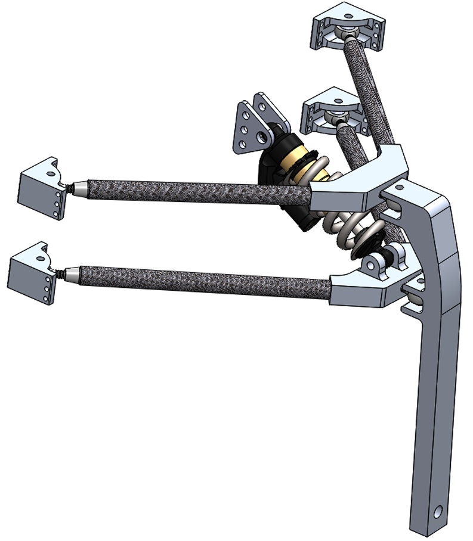
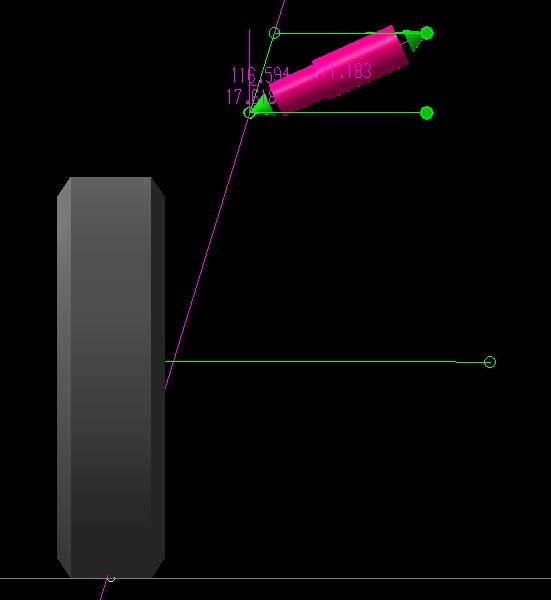

Cal Poly senior project
Solar Car Suspension
Designed front suspension geometry for a PROVE Lab solar car, then helped turn the kinematic model into carbon fiber wishbones, machined aluminum hardware, bonded joints, and a physical assembly.

Goal
PROVE Lab was developing a solar car intended for a straight-line speed-record attempt. The suspension needed to package inside narrow aerodynamic wheel fairings, support a lightweight vehicle at speed, integrate with the carbon fiber chassis, and preserve predictable steering behavior.
The main engineering targets included a 70 mph functional speed, 2.5 Hz target natural frequency, less than 0.5 in tire scrub, 0 degree static toe within 2 degrees, quick wheel removal, and a minimum 1.5 factor of safety against yield.
My Role
My main contribution was the suspension geometry and kinematics. I built the Lotus Shark model, adjusted the controllable hard points around the aerodynamic packaging constraints, and tuned the layout to reduce bump steer, tire scrub, scrub radius, and camber change while preserving a small caster angle for straight-line stability.
- Modeled the suspension in Lotus Shark and evaluated motion parameters through wheel travel.
- Helped select a double wishbone architecture using carbon fiber tube wishbones and machined metal interfaces.
- Researched the aluminum-to-carbon bonding process and identified a practical epoxy method that avoided acid etching.
- Worked through late packaging changes after the aerodynamics team narrowed the wheel fairing, requiring a major front suspension redesign.
Design Decisions
The final front suspension used a double A-arm layout with roll-wrapped carbon fiber tubes, 6061-T6 aluminum uprights and inserts, threaded rod ends for adjustment, and a direct-mounted Cane Creek DBair shock. A pull-rod and bell crank package was considered, but the direct shock mount fit the fairing and frame more cleanly while giving a near-linear motion ratio.
The redesign moved from the earlier steel fork-style upright concept to a one-sided 6061-T6 aluminum upright. That reduced wheel-attachment width for the tighter fairing, removed weld/notch stress concentrations, and kept the upright to roughly three pounds.
Kinematics
The Lotus Shark model produced a layout with 5 degrees caster, near-zero scrub radius, less than 0.1 in modeled scrub, about 0.2 degrees bump steer, 17.07 degrees kingpin angle, 0 degree static toe, 0 degree static camber, and less than 2 degrees camber change.
After assembly, basic measurement checks showed the suspension dimensions matched the model, with 0.25 in measured horizontal scrub. That was not identical to the model, but it stayed inside the design tolerance.
Manufacturing and Validation
The hardware was designed around real shop constraints. The 17 in aluminum uprights required multiple setups, the top inserts required five setups, and the bottom inserts required nine setups on three-axis Haas VF-2 mills. Several details were revised for manufacturability, including larger fillets, rounded shock-tab corners, and bracket changes to reduce toolpath and setup difficulty.
The FMEA identified bonded joints as the most critical failure mode. For the aluminum-to-carbon interfaces, we used West System G/flex epoxy with 80-grit surface prep, acetone cleaning, and 0.007 in glass beads to control bond gap. Two ASME lap shear tests showed no epoxy deformation before the aluminum samples began yielding at about 2000 psi.
Project Media



Takeaway
This was an early version of the same engineering pattern I use now: define the real constraints, model the motion, choose materials and interfaces, design around manufacturability, identify the critical failure modes, and test the assumptions that are hardest to trust analytically.